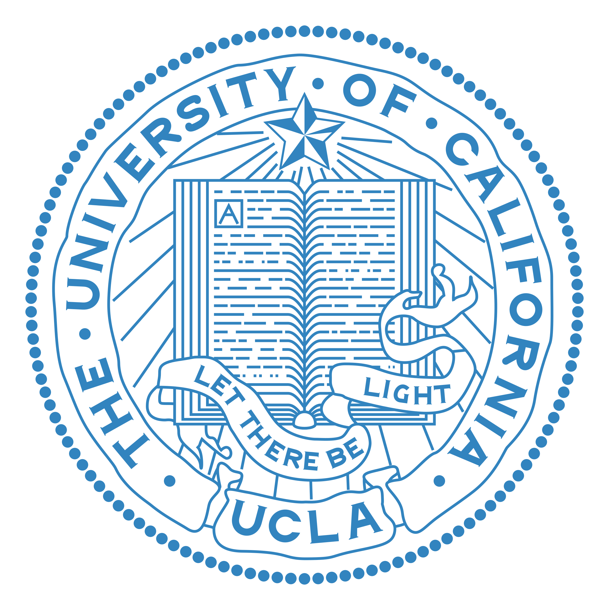

University of Chicago
 At the University of Chicago, where I'm pursuing a Master of Science in Computational and Applied Mathematics,
I am delving into the world of data science and its profound implications for decision making and problem-solving.
I am passionate about applying advanced data technologies and mathematical models to transform complex data sets into actionable insights.
As a current High-Performance Computing Research Assistant at University of Chicago Research Computing Center,
I am gaining hands-on experience in web scraping, data extraction, and interpretation with the projects from different programs, such as
Chicago Booth.
At the University of Chicago, where I'm pursuing a Master of Science in Computational and Applied Mathematics,
I am delving into the world of data science and its profound implications for decision making and problem-solving.
I am passionate about applying advanced data technologies and mathematical models to transform complex data sets into actionable insights.
As a current High-Performance Computing Research Assistant at University of Chicago Research Computing Center,
I am gaining hands-on experience in web scraping, data extraction, and interpretation with the projects from different programs, such as
Chicago Booth.
My professional interests lie in big data technologies, machine learning, and optimization. Over time, I have accumulated a broad portfolio of projects that underline my ability to extract strategic insights from complex data. My key goal is to drive data-informed decisions, and I am comfortable handling every step of the data science process, from the conception of ideas to their final execution.
University of California, Los Angeles
As an alumni of the University of California, Los Angeles with a Bachelor of Science in Applied Mathematics with Specialization in Computing, my journey in data science began with a strong foundation in quantitative analysis and machine learning. I dedicated myself to a multitude of roles, including Artificial Intelligence and Quantitative Research Assistant, offering me the platform to explore and apply AI and data analysis in diverse settings.
UCLA played a pivotal role in building my solid base in mathematics, statistics, probability, and programming, which have been vital in shaping my data analysis career. My education at UCLA harmonized theory with hands-on practice, empowering me to analyze complex datasets and derive insightful, evidence-backed strategies. I am proficient in marrying mathematical modeling, numerical methods, and optimization techniques with the latest developments in data science, making me a valuable contributor to any data-driven initiative.
Interests
My interest in data science is complemented by a strong commitment to organizational leadership and community engagement, where I have leveraged my skills in project management, strategic negotiation, and event organization.
In my role as Vice President of the Business Department for the Chinese Students and Scholars Association, I demonstrated strategic acumen by securing sponsorship contracts with nearly 20 diverse businesses. Moreover, I managed and led a successful in-person welcome event for new students, where my advanced communication, problem-solving, and decision-making skills effectively addressed the needs of a dynamic community.
At the Southwestern Chinese Students and Scholars Association, as a member of the Career Development Department, I was instrumental in organizing an online career fair. This event served as a crucial platform for 20 companies to connect with about 500 potential student candidates. Additionally, my role extended to digital marketing strategies, where I utilized social media to reach an audience of approximately 2000 viewers. Serving as a liaison between companies and students, I showcased my skills in managing communications and resolving potential issues efficiently.
As part of the United States Chinese Elite Consortium's Operations Development Department, I contributed to the high-impact "Chinese-Youth Cloud Summit" event. The event achieved significant success, amassing over 765,000 views and garnering widespread media attention. This accomplishment underlines the effective teamwork, strategic project management, and innovative approaches I brought to maximize the event's reach and impact.
These leadership roles have not only broadened my professional perspective but have also instilled in me the values of collaboration and strategic thinking. They have further refined my ability to manage complex projects and navigate challenging scenarios, skills that I believe are crucial to my professional journey in data science.